Every menu. Everything inside it. Straight from the build itself.
The 100% build · pace-v16-4 · Certificate #2 stands on it (Store Review) · Quality PASS · Efficiency PASS · QA close-out runningEvery picture on this page is a real screen of this build. Nothing is drawn from memory. Where something is not in the build, this page says so, in the open.
Under the waterline, holding it all up: your account + sync · Bring my calendar in · Plans + Plus · the whole app in Spanish.
Read from the build itself, in its real order. The menu starts hidden. One tap on the little ship opens it, wide. A tap on the thin edge closes it.
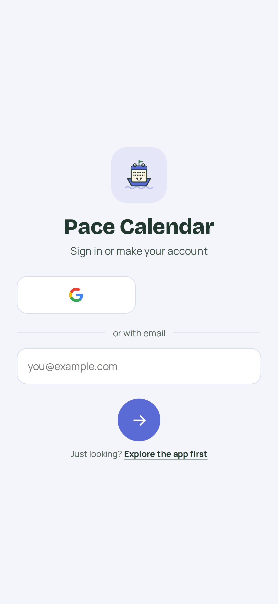
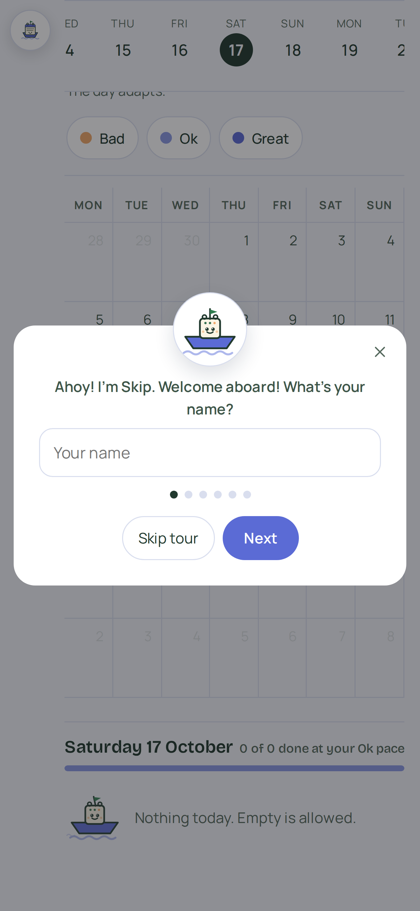
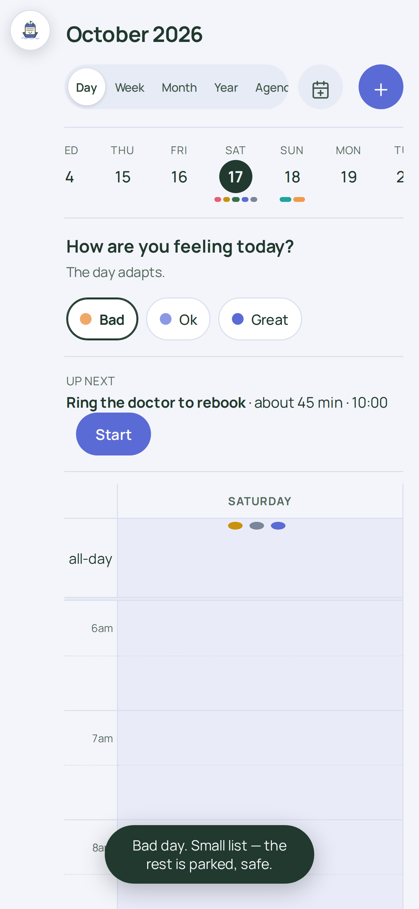
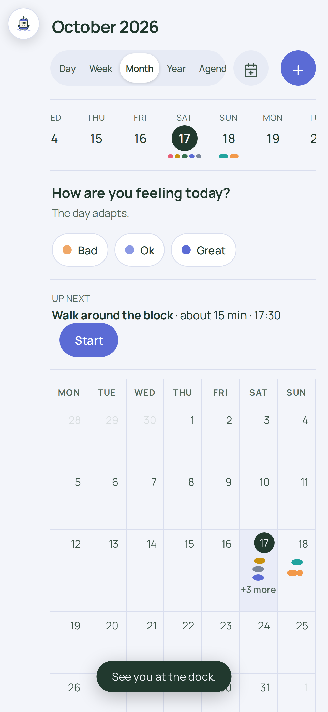
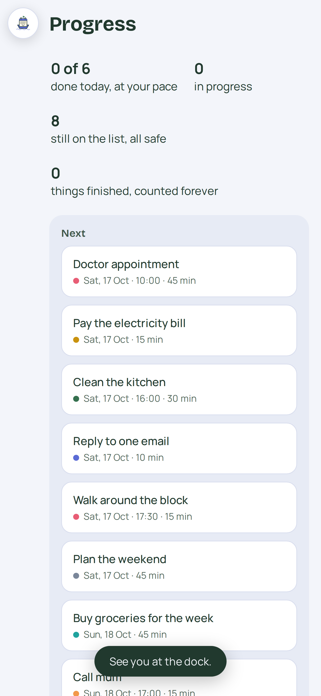
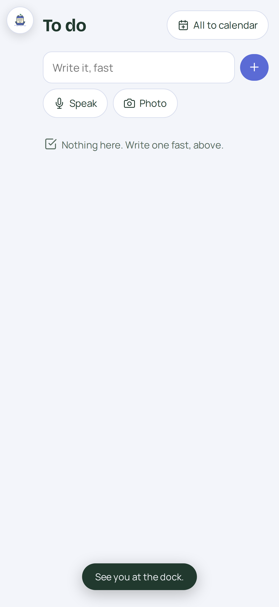
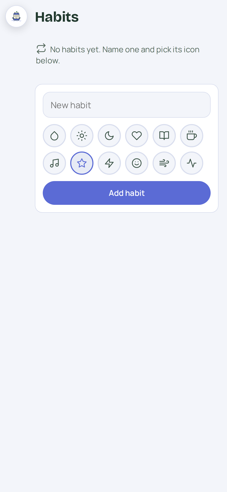
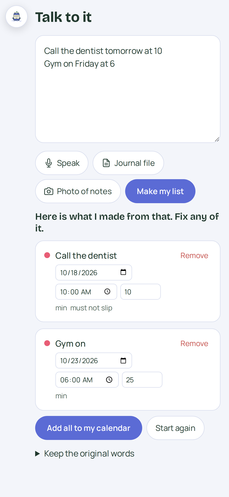
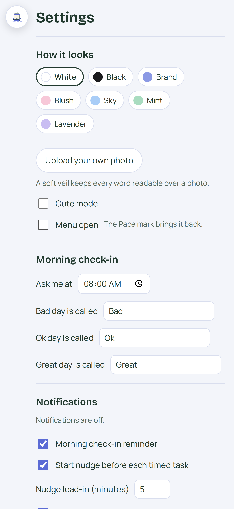
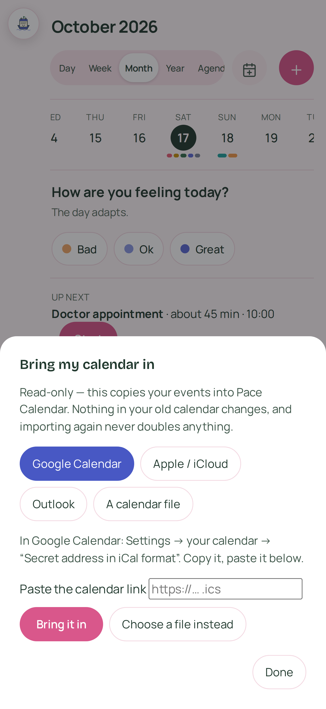
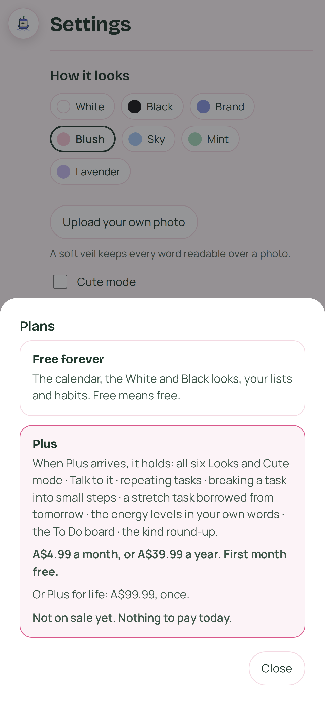
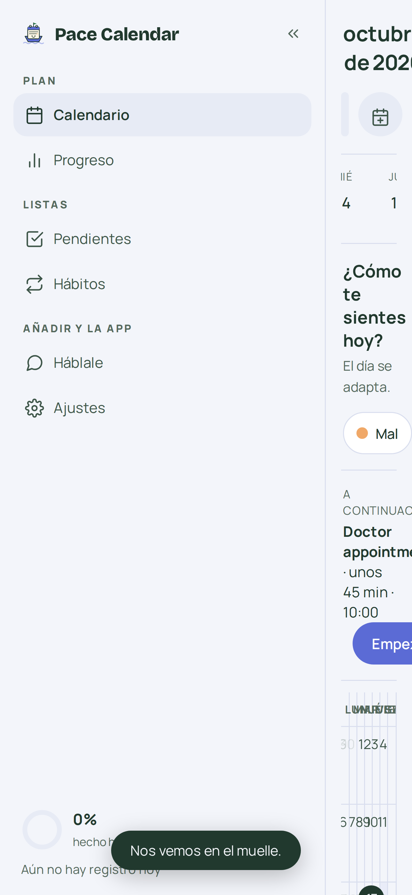
Pace Calendar — The Guide · Read from the build itself: tree pace-v16-4 · AAB SHA256 e0338257b8829ce78cf33da854fe67700c7b2f87710a2e8451433b43fbf6c226
Icon in this build: MD5 99d021582d15efb874233493ca7732b2 — byte-identical to your approved mark (variant D, approved 14 Oct).
All frames: proof-pack/ in this tree, shot from this build's own bytes.